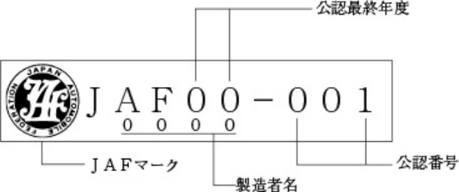

カートレーシングスーツの国内公認基準
P.1カートレーシングスーツの国内公認基準
第１章 総 則
第１条 申請の範囲
申請については本基準の内容を満たした旨の証明書を添付のうえＪＡＦに申請しなければならない。
なお、素材の色については自由とするが、素材およびタイプが異なるレーシングスーツについては、それぞれ別々に申請が必要となる。
第２条 公認の申請
公認の申請はＪＡＦ所定の書式を用い公認申請料を添付して、申請者の居住地または所在地を管轄するＪＡＦ地方本部へ申請し、この申請には必ず本基準に合致している旨の証明書が添付されていなければならず、書式の記載事項および署名欄をすべて満たし、写真、サンプル等の必要貼付物や必要書類等は申請に添付して提出しなければならない。
また、申請対象となるレーシングスーツとその素材は見本として申請と同時にＪＡＦに提出すること。
第３条 公認申請の資格
公認申請は、「レーシングスーツの製造者」または、製造者の委託を受けた「指定代理店」であり、また輸入製品については「輸入代理店」が申請を代行することができる。
「レーシングスーツの製造者」、「指定代理店」あるいは「輸入代理店」は公認申請時点においてＪＡＦ特別カート団体または加盟カート団体としてＪＡＦに登録されていなければならず、また申請者は当該特別カート団体または加盟カート団体の代表者でなければならない。
なお、「指定代理店」、「輸入代理店」が公認申請を行う場合、公認申請の当該欄に製造者ならびに代表者からの公認申請委託承認に伴う証明印またはそれに代わるものが押印されていなければならない。
第４条 公 認
公認を申請するレーシングスーツは、第5条に定めた比較実験が行われており試験結果が本基準に合致している旨の証明書が用意されていなければならない。
第５条 比較実験と基準
試験は申請するレーシングスーツの構造、強度、摩耗状況等を、皮製のレーシングスーツと比較するものである。
従って、比較試験に用いる皮は、すでに一般市販されているレーシングスーツ（オートバイ用も含む）の素材として使用されているものと同一のものであり、かつ皮の厚さは最低1mm以上の牛皮のものを対象とする。
当該比較実験はＪＡＦ認定の検査機関により実施されていなければならない。
また、同実験に用いるレーシングスーツの試験片は一般市販される状態の構造（表地、中地、裏地等が一体構造として縫製された状態のもの）と同一条件のものを用いなければならない。
１．摩擦溶融比較試験
摩擦溶融比較試験は、ＪＩＳ規格の試験方法Ｌ1056のＣ法に基づき、実施されなければならない。
２．摩耗強度の比較試験
摩耗強度の比較試験は、ＪＩＳ規格の試験方法Ｌ1096のＣ法に基づき、「摩耗輪Ｈ－18」を用い回転数を500回と1000回の2種類が実施されなければならない。
３．引き裂き強度試験
引き裂き強度試験は、ＪＩＳ規格の試験方法Ｌ1096のＤ法に基づき実施されなければならない。
４．公認基準
公認対象となるレーシングスーツは、下記内容に基づき総合的に判断し決定する。
１）上記１．の摩擦溶融試験においては、表地の摩擦溶融状態について確認を行う。
２）上記２．の摩擦強度等の試験においては、比較に用いた皮の摩擦減量数値の130％以下を確保することが望ましいが、それを超える場合であっても、縫製上最も内側となる裏地の摩耗部分の破壊損傷度が20％以下であればよい。
３）上記３．の引き裂き強度試験においては、構造の引き裂き強度について確認を行う。
４）公認対象となるレーシングスーツは、手首、足首等の運動性能の部分を除き、他のいかなる部分においても上記
２）の数値を確保する必要がある。
また、下記の部分についてはさらに安全のために十分な補強または保護が施されなければならない。
（1）膝を中心に膝の周囲全般
（2）肘を中心に肘の周囲全般
P.2（3）肩を中心に肩の周囲全般
なお、補強、保護等については、比較試験に用いた構造（表地、中地、裏地等が一体構造として縫製された状態のもの）と同一のものを使用することが望ましく、その場合補強、保護された部分の強度は上記２．の皮の摩耗減量数値と同等または、それ以下の数値を確保していなければならない。
５）レーシングスーツの製造過程での縫製については十分な強度を確保していなければならない。
※なお、申請するレーシングスーツには本基準以外に耐熱、防炎効果のある素材が含まれていることが望ましい。
第６条 公認の確認
公認の確認は、申請日から70日以内に開催されるＪＡＦカート部会で報告され内容確認が行なわれた後公認される。
第７条 公認ラベルの取り付けの義務
公認されたレーシングスーツには、ＪＡＦ指定の公認ラベルを取り付けなくてはならない。
公認ラベルの取り付けはレーシングスーツの前面上部の見やすい位置に取り付けなければならない。
取り付け方法については細則：公認ラベルに従う。
第８条 公認の発効および有効期間
公認の発効日は申請が審査承認された翌日からとし有効期間は公認発効日から３年を経過した年の12月末日までとする。
公認有効期間が満了した後、さらに２年間ＪＡＦ公認競技会で使用することが認められる。
第９条 公 認 書
公認書はＪＡＦに３年間確保され、公認書の写しは公認発効日から10日以内に申請者に郵送される。
第10条 公認の無効
公認は次の場合無効となる。
１．本基準第８条の有効期間を経過した場合。
２．公認書の記載事項に虚偽の申請が発見された場合。
３．公認されたレーシングスーツの仕様が実際の仕様と異なっていた場合。
第11条 公認申請料
「カート競技に関する申請・登録等手数料規定」の通りとする。
第12条 販売の義務
公認されたレーシングスーツは、メーカーのカタログに記載され、一般に販売され自由に購入できるものとする。
限定販売と明示されるものでもその販売方法は一般の販売店またはユーザーを対象に販売されなければならない。
第２章 再 公 認
第13条 再 公 認
公認されたレーシングスーツは、当初公認された状態に変更がない場合に限り随時再公認申請を行うことができる。
この場合の書式はＪＡＦ指定の再公認申請書を使用すること。
第14条 再公認の申請料
新規公認のための申請料金と同一とする。
P.3細則：公認ラベル
ＪＡＦ公認ラベルの製作ならびに取り付け
ＪＡＦ公認ラベルは下記の基準に従い製作され取り付けられること。
１．公認ラベルは公認申請したレーシングスーツの製造者、または指定代理店でのみ取り付けることが出来る。
２．公認ラベルの取り付けは、公認されたレーシングスーツに取り付けられなければならない。
３．申請者は公認ラベルを次に従い製作しなければならない。
ａ）縦３cm×11cm以上であること。
ｂ）ラベルにはＪＡＦマーク、文字および公認番号ならびにレーシングスーツ製造者名が明確に記載されていなければならない。
ｃ）ラベルに記載する文字また公認番号の色は下記に従うものとする。
公認ラベル：白地に紺字で製作する。
４．公認ラベルの内容を、ＣＩＫ－ＦＩＡ『HOMOLOGATION REGULATION』8.11.2.7にならい、レーシングスーツに直接刺繍することにより、公認ラベルの貼付に代えることができる。
５．公認番号は公認最終年度ならびに申請番号で構成される。
６．ＪＡＦ公認番号は公認申請承認の後10日以内にＪＡＦから申請者に対し返送する公認書に明記される。
